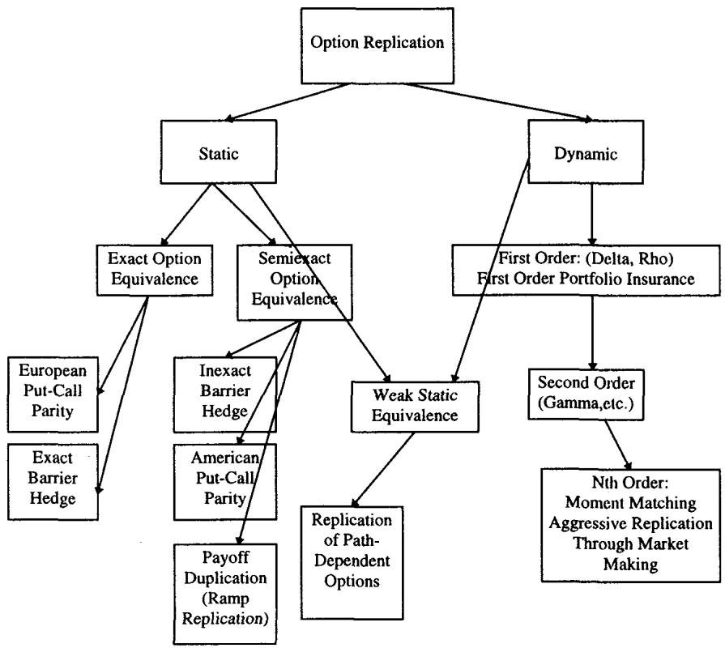
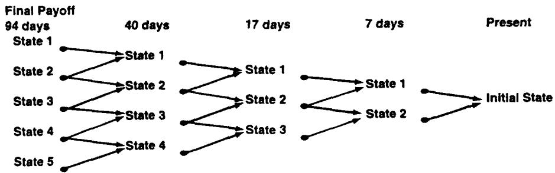
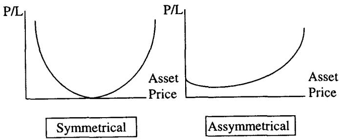
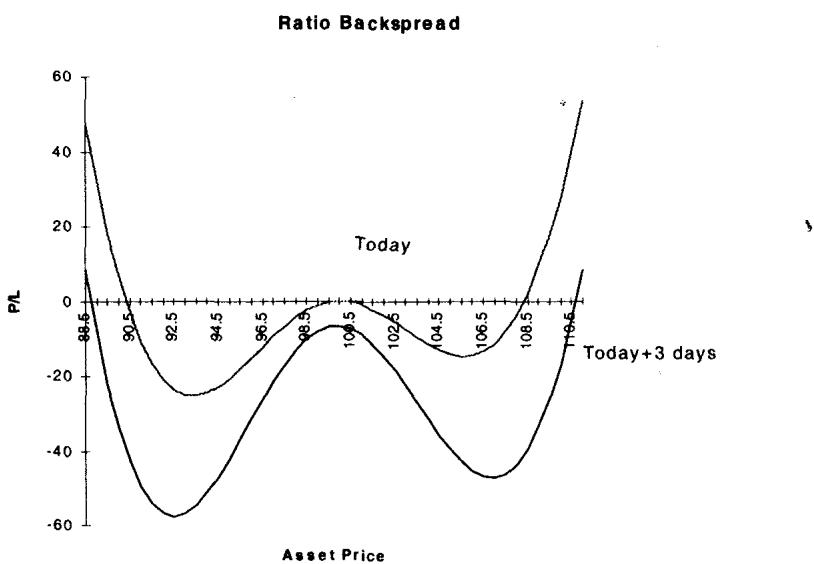
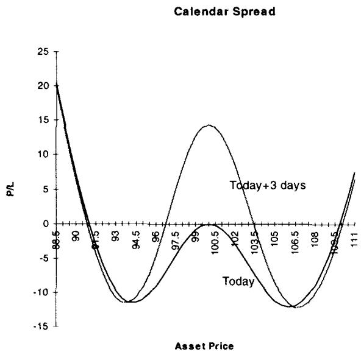
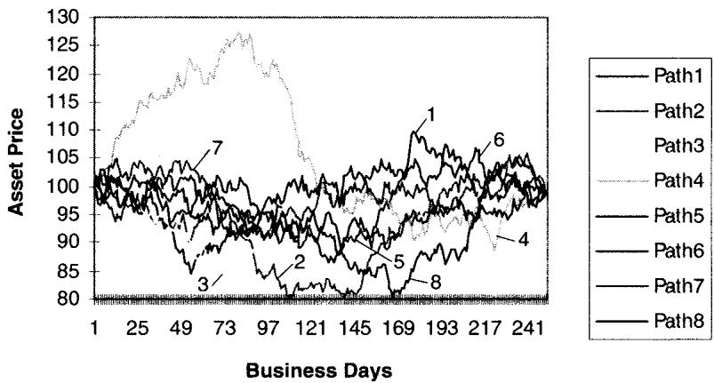

第16章：期权交易概念（Option Trading Concepts）
Hiring a trader is like selling volatility. If he does very well or very poorly, you are out of a job. —— An old option proverb
导读：本章要解决的问题
这一章是全书前半部分的术语收口。Taleb 把书中各处用到的交易概念集中定义一遍：复制（replication）、动态对冲（dynamic hedging）、中性价差（neutral spreading）、波动率交易里 vega 与 gamma 的区分、软硬 delta、各阶波动率押注，最后用两个案例研究把"动态对冲让一切变得路径依赖"这条贯穿主线钉死。开篇那句谚语本身就是态度：雇一个交易员像卖波动率，他做得太好或太差你都要丢工作，所以这一章的落点在于怎么把风险拆清楚、对冲干净、活下去，而非追求暴富。
把全章压缩成几条主线：
- 复制是一个谱，从静态复制（找一个不需要持续再平衡的组合去匹配头寸）到动态对冲（守住最小希腊字母敞口、持续再平衡）。中间还有 Derman 的二叉树回滚法和 Taleb 自己的递归复制法。要警惕用"久期恒定"的工具去静态复制"有停时"的工具。
- 动态对冲让每一个期权都变成路径依赖。这是本章最重要的一句断言，两个案例研究就是为了证明它。
- 中性价差是做市的核心技术：用期权对冲期权，捕捉中心极限定理（降方差、抬漂移）、隔绝定价公式的瑕疵、兑现理论 edge。
- "做多/做空波动率"在风险管理上没有意义，必须把 gamma（带区间）和 vega 分开说。一阶波动率交易 vega 与 gamma 同侧、二阶波动率交易 gamma 会翻号、加权 vega 会反转。
- 路径依赖是动态对冲者的命门。同样的起点、终点、波动率，重排收益序列就能让动态对冲的盈亏天差地别；一个价外 call 的买方甚至可能亏得比权利金还多。
笔记沿原文 复制/动态对冲/中性价差 → VEGA VERSUS GAMMA → SOFT VS HARD DELTAS → VOLATILITY BETTING → 两个案例研究的顺序展开，在每处把交易员的操作接回它的数学结构：自融资复制接鞅表示、动态对冲盈亏接 gamma-theta 关系、价差隔绝公式接 put-call parity、软 delta 接期权 delta 的渐近消失、路径依赖接离散对冲盈亏的实现方差。
一、复制：从静态到动态的一个谱
正式地说，期权复制（option replication）指用其他工具自融资地（self-financing）复制某个期权工具支付的方法（图 16.1）。但实践中，复制是一个更宽的概念，覆盖一切通过期权完成的操作。

静态复制（static replication）是一种风险管理策略，它为一个期权头寸找到一个不需要持续再平衡的匹配。静态复制有两个目的：降低这笔交易的盈亏方差、把交易成本压到最小。
最简单的静态复制就是 put-call-asset 套利：把一个 call 合成成一个 put，反之亦然。这正是第 15 章 4.1 节那条 的应用，剥掉确定性的远期内在价值后，call 和 put 的时间价值部分可以互相合成。
Taleb 在这里插了一条警告，它后面在二元和障碍期权的讨论里会反复出现：
读者应当警惕，用具有恒定久期的工具去静态复制那些带停时（stopping time，即久期不稳定）的工具。
这条警告的理论根是停时。一个香草欧式期权的到期是确定的 ；一个障碍或美式期权的有效终止时刻是一个随机停时 （首次触障或最优行权时点）。用一组到期固定的香草去匹配一个 随市场漂移的工具，匹配只在当下成立，市场一动 的分布就变，复制立刻失配。第 15 章讲分桶时"敞口在桶间游移"是同一回事的另一面。
还要区分分解（decomposition）与复制（replication）。很多交易需要操作者把它分解开来，作为一种价值发现方法和对冲方向的指引。比如分解能揭示偏度风险（skew risks）。但多数情况下，由分解得到的复制在实操上行不通。这个区分很实用：分解是为了"看懂"一笔交易由哪些风险构成，复制是为了"对冲掉"它，前者总能做，后者常常做不到。
1.1 Derman 的二叉树回滚法
通过在二叉树上回滚风险来做静态复制（Derman's method），做法是：取证券的最终支付，围绕它构造一棵二叉树，试图在树的几乎每个节点上复制这个支付。这种方法对对冲某些障碍期权的风险有用。Taleb 说他会展示一个改造版本，在那里匹配的不只是支付，连希腊字母也一起匹配。
1.2 递归复制法：在每个状态上匹配希腊字母
作者本人用得相当成功的递归期权复制法（recursive option replication），做法是为这个结构取一系列状态，找到能最小化对这些状态敞口的交易（图 16.2）。一个状态（state）定义为未来某个可能的资产价格。

要在每个状态上匹配的希腊字母清单如下：
- Delta
- 修正 Gamma（Modified Gamma）
- 修正 Vega（Modified Vega）
- Theta
- 修正 Rho（Rho1、Rho2）
- Bleed
- 相关性 delta（如果有）
最好的静态对冲，是在所有节点的每个状态上都匹配住这些希腊字母的那个。它的缺陷是，操作者常常要花掉这笔交易收入的一大部分去支付买卖价差来匹配希腊字母，因为这可能需要在常常缺乏流动性的市场里做一大堆组合交易。答案往往就是动态对冲。
把递归复制接回理论，它是用离散的状态网格去逼近鞅表示定理（martingale representation theorem）所保证的复制组合。理论上任何（可积的）支付都能被标的的自融资组合复制，但那个组合的权重是连续变化的；递归法把"连续"离散成有限个状态，在每个状态上匹配到二阶、三阶敏感度，本质是在做一个有限维的对冲投影。它做得越细、匹配的希腊字母越多，离散误差越小，但要付的买卖价差也越多。这个权衡直接把话题引向动态对冲。
二、动态对冲：守住最小敞口、持续再平衡
动态对冲（dynamic hedging）意味着守住一个最小的希腊字母敞口、持续再平衡，以达到某种中性。它与静态对冲相对：静态对冲把交易看成一个带某种到期结局的组合，动态对冲则不去寻找完全中和整棵树的交易。这就是它和图 16.2 那种递归复制的区别，动态对冲者不追求把树清零。
动态对冲牵涉 book 里所有的希腊字母。它从 delta 的再平衡开始（随市场移动、或随 delta 因时间 bleed 而变化）；随着 gamma 变化，它通过期权来调整 gamma、以及随之而来的时间衰减；随着市场移动，Rho1 和 Rho2 也要调整，等等。
Taleb 在这里下了本章的核心断言：
关于动态对冲有一点值得一提：它让每一个期权都变成路径依赖（path dependent）。
这句话是全章两个案例研究的论题。把它接回理论：一个欧式期权的终端支付 只依赖 ，理论上路径无关。但动态对冲者的盈亏对应的是另一个量，即"期权 + 沿途每天再平衡的 delta 对冲"的合计。离散对冲下，这个合计是
每一天的盈亏是"当天实际平方收益减去隐含方差"乘以当天的 dollar gamma。gamma 随 和时间变化，所以"大 move 落在 gamma 大的时候还是 gamma 小的时候"会显著改变求和结果。终端 相同、但路径不同，这个和就不同。于是连续时间里路径无关的欧式期权，在离散动态对冲下变成了路径依赖的盈亏。案例研究会把这个公式的后果用数字砸出来。
三、中性价差：用期权对冲期权
中性价差（neutral spreading）是一种期权交易技术，买入一定数量的期权、卖出另一批，全部行权价和到期都不同。它是动态对冲的一种形式，允许保留一些希腊字母风险，前提是这风险得到了恰当的补偿。
在场内交易的行话里，spreader 是那个把"红票"和"蓝票"配起来的人（早年交易所里红票是卖单、蓝票是买单）。中性价差有不同的程度，但一般认为：只要某人买一个期权、卖另一个期权，且它们的行权价和到期足够接近，捕捉"价值"的能力就会大大增强。第 15 章对有偏资产的研究说明，在偏度使"下行"行权价与"上行"行权价显著不同的市场里，spreader 还需要一些额外约束。
Taleb 给了一段行业史佐证：最成功的期权交易公司多半由 spreader 创立，迄今最成功的瑞士银行公司（Swiss Bank Corporation，通过它与 O'Connor and Company 的联合，后者原是芝加哥期权交易所一家成功的做市商）至今要求它的交易员有场内经验，以磨练价差技巧。价差的精微之处通常只能靠经验获得，工具之间如何"联姻"理论上能确定，但和多数游戏一样，只有充分实践才能让人学会把一个期权和另一个配起来。经典价差技术可以轻易延伸到奇异期权领域，许多规则是通用的，只是行权价与到期之间的"距离"变得更难评估。
3.1 价差的三个优势
Taleb 把价差作为做市技术的价值拆成三条，每条都有清晰的理论身份。
第一，捕捉中心极限（Capturing of Central Limit）。 做市商能降低方差（读作"运气"）、最大化漂移（读作"技能"），这个概念在第 3 章讲过。它的数学身份是大数定律与中心极限定理：单笔交易的盈亏方差大、信噪比低；把大量近似独立的小价差累加起来，方差按 衰减、而每笔的正期望（来自做市价差或理论 edge）线性累加，于是技能（漂移）相对运气（方差）越来越显著。这就是做市商靠"多做"而非"做大"取胜的统计基础。
第二，隔绝定价公式的风险（Insulation from the Risks of the Formula）。 用期权对冲期权，是规避 Black-Scholes-Merton（或其他公式）瑕疵的一个可靠办法。Taleb 的论证很干净：市场在 100，平值 100 的 put 和 call 隐含波动率都是 15.7%。无论公式和分布有什么效应，put-call parity 套利会强制同行权价同到期的 put 和 call 有相同的时间价值（因而相同的波动率）。
假设 104 call 的市场波动率是 16.2，104.5 call 的市场波动率是 15.5。卖 104 call、买 104.5 call，同时调整数量以满足低剩余 gamma 和 delta 中性，看起来是个好主意。如果有人发现（许多人确实发现了）BSM 低估了价外期权，对这笔交易没有实质影响，因为两个期权都受同样影响；反过来，如果发现 BSM 高估了上行（在有偏资产里确实如此），同样如此。两个行权价足够接近，价差对公式免疫。
这条的理论身份是：价差让定价误差以差分形式出现。如果定价偏差是 moneyness 的光滑函数 ，那么相邻行权价价差承受的是 ，是误差的一阶差分而非误差本身。只要 小，系统性的公式偏差被大幅抵消，留下的是局部相对错价，而那正是 spreader 想捕捉的东西。
第三，兑现理论 edge（Realization of Theoretical Edge）。 用期权对冲期权，是对付那些困扰交易员的二阶、三阶导数的安全办法。Taleb 把中性分成三个层级：
- 第一层：delta 中性（含 Rho1、Rho2）。
- 第二层：gamma 中性。
- 第三层：vega 中性。
理论 edge（theoretical edge）是一个工具的交易价格与某个界定的公允价值之间的差。价差有时能锁定这种 edge，原因有两个。其一，隔绝于广泛的参数集（Insulation from the Broad Set of Parameters），CBOE 场内有个做市商把自己的存活归功于他只交易 call。其二，它是一个有效的做市装置（An Effectual Market-Making Device），期权个体通常缺乏流动性，而整体市场流动性很好，这也是活跃做市商能拿到便宜融资的原因。交易员越活跃，只要他持续在理论价值"之上"或"之下"成交，最终就越赚钱。有些做市商公司给交易员强加成交量要求逼他们活跃，在严苛的 gamma 和 theta 约束下逼他们活跃交易，以确保交易员满足某些预算要求。
四、波动率交易入门：vega 与 gamma 之别
"做多"或"做空"波动率不携带真正的风险管理含义。必须把 gamma（带一个区间）和 vega 分别限定清楚。
"做多和做空波动率"这个说法不能被动态对冲者使用。1980 年代早期，交易员很难向睡眼惺忪的老板解释 gamma 和 vega 的区别。对单个期权来说，头寸是直截了当的，因为它对两者要么同时多、要么同时空。
Taleb 讲了一个段子来点破混淆。某人 X 曾（短暂地）为一个老板工作，这老板把自己的期权交易"专长"归功于他曾经（意外地）在一个期权头寸上极其赚钱。X 当时做空日历价差（short calendars），被问是做多还是做空波动率。X 是做空波动率的，但他想要市场移动。老板眼里立刻浮现困惑。X 很难解释他是做多 gamma、做空 vega，在试图给老板讲期权定价理论讲到喘不过气之后，他下决心再也不为一个不会听的人工作。
这个段子的理论内核是：gamma 和 vega 度量的是两种不同的波动率敞口。gamma 是对已实现波动率（realized volatility，市场真的动了多少）的敞口，它从动态对冲的 项里赚钱；vega 是对隐含波动率（implied volatility，市场给期权定价用的 ）的敞口。做空日历价差的人，卖近月、买远月，近月 gamma 大，所以净头寸做多 gamma（想要市场动起来兑现近月的高 gamma），同时因为远月 vega 大、近月 vega 小，净头寸做空 vega（怕隐含波动率上升抬高远月）。"想要市场动、又怕隐含波动率涨"这两件事在单一的"多/空波动率"语言里无法表达，必须拆成 gamma 和 vega。
4.1 Option Wizard：期权策略的基本形态
Taleb 给了一张按"产品复杂度 × 交易复杂度"分类的策略清单，它本身就是后续章节的目录。
简单交易 + 简单产品：跨式（straddle）、宽跨式（strangle）、蝶式（butterfly）、波动率押注。
复杂交易 + 简单产品：做多尖峰态（leptokurtosis，四阶矩押注）、玩波动率期限结构、日历/对角价差、做多 vega 凸性、做多 Eurodollar 的"阻尼"效应、分布套利（偏度交易）。
简单交易 + 复杂产品：用障碍期权玩方差比（variance ratio）、bet 与反射障碍。
复杂交易 + 复杂产品：通过或然权利金期权（contingent premium options）做分布套利、用障碍玩二阶收敛（套利曲线斜率）、用 reverse knock-out 凸性对冲 ramp 期权、用 bet 与复合期权的组合套利分布的高阶矩。
这张表的组织逻辑值得记住：交易复杂度（单边多空 vs 多空混合）和产品复杂度（香草 vs 奇异）是两个独立维度。它和第 15 章高阶矩的讨论接得上，三阶矩押注、四阶矩押注都被安排进了"复杂交易"那两栏。
4.2 gamma 要带区间：日历价差的翻号 gamma
在一个两期权 book 里，用如下结构（表 16.1）：期权 A 是短期平值期权，期权 B 是中期平值期权。
做多或做空 gamma 必须用一个区间来限定（如第 8 章所示）。交易员需要说清他是持续做多 gamma、做多 up-gamma、做多 down-gamma，还是 gamma 在某处翻号。
日历价差（calendar spread）的 gamma 会在远离平值处反转。原因是，日历的卖方只能指望从日历上赚一笔有限的钱（一般就是平值日历的那点权利金贷方）。一个想押注两翼的操作者有几个选择：要么用价外期权对冲平值期权，要么更简单地玩日历。通过给时间价差施加一个比例（ratio），操作者可以让 gamma 在平值附近保持中性到轻微做空，但在两翼迅速变得非常正。
这把"gamma 是一条沿标的的曲线、而非一个标量"讲清了。日历价差近月 A 的 gamma 集中在平值附近的窄区、远月 B 的 gamma 摊在更宽的区间。卖近月买远月时，平值附近被近月的高 gamma 主导（净空 gamma），两翼则被远月的 gamma 主导（净多 gamma），于是 gamma 沿标的翻号。这正是第 8 章 shadow gamma 强调的"gamma 随标的位置变化"的一个具体形态，也解释了为什么 Taleb 坚持 gamma 必须带区间说。
| Long Vega | Short Vega | |
|---|---|---|
| Long Gamma | Long A, Long B | Long A, Short B |
| Short Gamma | Short A, Long B | Short A, Short B |
（表 16.1 波动率规则。本框架不用权重；期权 B 比期权 A 到期更长。四个象限对应 gamma×vega 的四种组合，对角线上的 Long A/Short B 与 Short A/Long B 就是日历价差的两个方向。）
五、软 delta 与硬 delta
软 delta 执行（soft delta execution）是通过一个期权完成的 delta 对冲，因而它会渐近地（随资产价格）消失。硬 delta（hard delta）在标的移动到极限时不会消失。
软 delta 一般用来覆盖二级 delta（即市场移动产生的 delta），这种 delta 用硬 delta 去对冲会在极端处加大风险。
把定义接到理论：硬 delta 是现货或期货头寸，它的 delta 恒为 、与 无关，所以无论市场走多远它都不消失。软 delta 是一个期权头寸，它的 delta 是 这类随 渐近到 0 或 1 的函数，且它自带 gamma。用软 delta 对冲，等于在调整 delta 的同时修改了头寸的 gamma 形态；用硬 delta 对冲只动 delta、不动 gamma。当你的负 gamma 已经在两翼很危险时，这个区别是生死攸关的。
5.1 算例：用软 delta 稳住翻号 gamma 的头寸
交易员账上有这样一个头寸：做多平值期权、做空更大数量的价外 call。
| Asset | 100 | 102 | 104 | 106 | 108 | 110 | 112 | 114 |
|---|---|---|---|---|---|---|---|---|
| Delta | 0 | 10 | 15 | 17 | 15 | 12 | -10 | -50 |
| Gamma | Long | Long | Long | Square | Short | Short | Very Short | Very Short |
在 106，交易员有一些来自多头 delta 的利润。如果卖硬 delta，他的负 gamma 在尾部会变得更糟：
| Asset | 100 | 102 | 104 | 106 | 108 | 110 | 112 | 114 |
|---|---|---|---|---|---|---|---|---|
| Delta | -17 | -7 | -2 | 0 | -2 | -5 | -27 | -67 |
注意这一行：在 106 卖掉 17 个硬 delta 把当前 delta 归零，但代价是把整条 delta 曲线向下平移，于是 100（-17）和 114（-67）两端的 delta 都更负了，头寸在尾部更危险。这正是"硬 delta 不消失"的恶果，它在极端处依然满负荷做空。
如果改为通过期权卖 delta，比如买一个 put 或一个 put 价差，则可以达到：
| Asset | 100 | 102 | 104 | 106 | 108 | 110 | 112 | 114 |
|---|---|---|---|---|---|---|---|---|
| Delta | -2 | -1 | -8 | 0 | 2 | 0 | -10 | -50 |
对比这一行和上一行：106 处同样把 delta 调到 0，但两端温和得多（100 处从 -17 变 -2，114 处从 -67 变 -50），因为 put 的 delta 在市场远离时自己消失了。软 delta 只在需要的中段起作用、在极端处退场，所以没有恶化尾部。
有时卖 delta 的最好办法是移动行权价（即把 gamma 的中心挪到接近做空区）。最初，多头 gamma 的团块聚在 100 附近、空头 gamma 聚在 112 附近。这轮上涨应该给交易员机会把中心从 100 挪到 106，从而稳住头寸。这种情形下最好的对冲是软 delta（买 106 区的期权）加上卖 100 区的期权。如果上涨继续，下一步是重复这个操作，把多头挪进 112 区。
在再平衡期权头寸时，交易员需要做这个测试：gamma 会翻向另一边吗？如果多头 gamma 翻成负 gamma，卖"硬"delta（现货或期货）会非常危险，因为盈亏会在矩阵的尾部变得更糟。
这条建议是 5.1 节算例的规则化总结。它的理论含义是：硬 delta 对冲假设头寸的 gamma 在对冲后保持稳定，但当 gamma 沿标的翻号时，这个假设破裂，平移整条 delta 曲线会在 gamma 为负的区域放大损失。软 delta 因为自带 gamma 且渐近消失，能在调 delta 的同时修补 gamma 形态，这是负 gamma 头寸在趋势市里自保的关键手法。
六、波动率押注：一阶、二阶与高阶矩
这一节的交易可以涉及不止一个期权，所考虑的全部是香草期权。
6.1 一阶波动率交易
用香草期权的一阶波动率交易（first-order volatility trade）满足下面的条件：
- 它单调地做多或做空波动率，尽管 gamma 不必恒定。
- 它的 vega 和 gamma 在市场的同一侧。
- 它意图保持 delta 中性。
这些特征适用于简单期权交易：做多跨式、做多宽跨式等等。任何"所有期权同为多头或同为空头"的交易形式都满足这些规则（表 16.1）。一阶波动率交易的优势是易于处理、盈亏容易预测（图 16.3），它们是复杂度较小的头寸。

"vega 与 gamma 同侧"是一阶交易的定义性特征，也是它易于预测的根源。所有期权同向（全多或全空）时，已实现波动率敞口（gamma）和隐含波动率敞口（vega）方向一致，盈亏对"波动率"这一个因子单调，不会出现自相矛盾的对冲需求。对应表 16.1，一阶交易就是左上角（Long A, Long B）和右下角（Short A, Short B）那两格。
6.2 二阶波动率交易
二阶波动率交易（second-order volatility trade）是一个包含不同行权价或不同到期的多头和空头期权、但限定在一个产品之内的交易。它的特征是：
- gamma 在图上总会从正翻到负。
- 它的原始 vega（raw vega）可以在某处变号（这不是必要条件）。
- 它的加权 vega（weighted vega）总会在图上某处反转。
- 由于复杂，二维图形表示往往变得无关紧要、揭示力很弱。
一个一比一的 call 价差，比如等量买 102 call、卖 106 call，当市场在 100 时表现得像单个 call。但如果市场涨到 104，它就会有"零 gamma、正 down-gamma、负 up-gamma"的特征，这正是一个 risk reversal 的特征。一个比例价差（ratio spread），操作者买 102 call、卖两倍的 106 call，则呈现相反的特征。
二阶交易的"gamma 必然翻号、加权 vega 必然反转"把它和一阶清晰区分开。多空混合的期权组合，敞口随标的位置和时间在多空波动率之间切换，所以单一的"多/空波动率"标签彻底失效，二维快照也难以表达（呼应第 14 章地形图对路径依赖工具的局限）。表 16.1 的另外两格（Long A/Short B、Short A/Long B，即日历价差）就是二阶交易的代表。
6.3 高阶矩押注
三阶矩押注（third moment bet）是一种分布套利，押注某个市场的波动率与资产价格之间的相关性。四阶矩押注（fourth moment bet）是做多或做空波动率的波动，可以用价外期权或用日历来实现。
这两句把第 15 章的统计语言接到了交易上。三阶矩押注就是押偏度，即押"价-波相关"（第 15 章 3.1 节那条偏度=移动与其波动的相关）；四阶矩押注就是押 vvol，即押峰度（第 15 章 2.1 节）。Taleb 给的两个实现工具各有道理：价外期权直接吃 volga（对 vvol 凸），日历价差则通过近远月波动率的相对变化吃 vvol。
举例：一个比例"反向价差"（ratio backspread / reverse spread）是大量买入价外期权、卖出较小数量平值期权的方法，但要确保交易满足"贷方规则"（credit rule，即交易初始产生正现金流）。当用价内期权时，贷方规则更难解释，那时应当用 put-call parity 规则扣掉每个期权内在部分的现值，把它们等同于价外期权。

图 16.4 的交易通过买入价外 put 和价外 call、卖出较小数量同到期的平值跨式完成。

图 16.5 展示第二种方法，买入某个数量的 60 天期权、卖出 80% 数量的 20 天期权。两种交易都显示头寸从肥尾和高峰中获益，但它们有不同的 vega 敏感度，且修正 vega 接近平。
"贷方规则"值得记一笔：它要求押注肥尾的结构在建仓时净收钱。这等于要求你做多的凸性（价外期权、肥尾敞口）是被对手"倒贴"给你的，这样即便市场什么都不发生，时间衰减也大致被卖出的平值期权权利金覆盖。它把第 15 章"彩票效应长期利好买方"那条观察操作化了：以贷方建仓的肥尾多头，是在被付钱持有凸性。
七、案例研究一：一个常规期权的路径依赖
下面的案例说明期权复制能在多大程度上路径依赖。
这个案例用一串收益（包括起始价、终止价及其波动率）。有了这些数字，就能在保持起始价、终止价、波动率不变的前提下，重排出大量不同的序列。Taleb 给了构造价格路径的算法：取一串百分比收益，比如 1%、5%、-1%、-5%，证券从 100 起，下一价是 ，再下一价 ，再 ，再 （终值）。价格序列是 100, 101, 106.05, 104.99, 99.74。把收益重排成 5%、-5%、-1%、1%，价格序列就变成 100, 105, 99.75, 98.75, 99.74，一条很不同的路径。
在例子里，目标是复制 252 个交易日：取一个 15.6% 波动率的任意分布（每个工作日平均移动 1%），重排成 106 条不同路径。所有价格都从 100 起、在 98.6 结束。

图 16.6 显示八条样本路径，说明可能产生的路径差异：一条路径的最高点是 127，另一条只有 105。又一次反直觉的是，两者有相同的均值和相同的波动率。事实上，有些重排结果的年内区间是 10%，另一些是 60%。图里为清晰起见只画了分析中用到的八条。
交易员买 1000 万一年期、行权价 100 的欧式 call，每日再平衡 delta。欧式期权号称路径无关，因此对它们只有最终结果重要。表 16.2 显示一个策略的盈亏：在恰好 15.6% 买波动率、无交易成本、每日收盘对冲。
| P/L | Freq | P/L | Freq | P/L | Freq |
|---|---|---|---|---|---|
| -72000 | 1 | -20000 | 1 | 32000 | 6 |
| -64000 | 1 | -16000 | 12 | 36000 | 4 |
| -44000 | 1 | -12000 | 13 | 40000 | 4 |
| -36000 | 1 | -8000 | 4 | 44000 | 4 |
| -32000 | 1 | -4000 | 2 | 48000 | 3 |
| -28000 | 2 | 0 | 6 | 52000 | 1 |
| -24000 | 1 | 4000 | 5 | 56000 | 1 |
| 8000 | 7 | 68000 | 2 | ||
| 12000 | 2 | 72000+ | 1 | ||
| 16000 | 6 | ||||
| 20000 | 5 | ||||
| 24000 | 7 | ||||
| 28000 | 2 |
（表 16.2 动态对冲的结果，共 106 条路径。摘取自原表，盈亏从 -72000 到 72000+ 散布。）
这个结果的要害在于：106 条路径有完全相同的起点、终点、波动率，因此完全相同的欧式期权终端支付，但动态对冲的盈亏却从亏 7.2 万散布到赚 7 万以上。理论上欧式期权路径无关，可一旦每日离散对冲，盈亏就由 决定，大 move 落在 gamma 高的时段（接近行权价）还是 gamma 低的时段（远离行权价），结果天差地别。这就是"动态对冲让欧式期权变路径依赖"的数值证据。
Taleb 讲了一个测验：他把这个问题抛给三类人，初级交易员、有经验的交易员、交易主管。多数初级交易员和交易主管复述培训材料里的话，说波动率就是波动率、事件次序无关紧要；有经验的交易员则解释我们面对的是离散而非连续时间世界，会有一个随交易频率变化的方差。有趣的结果是：所有有经验的交易员答对了，所有交易主管答错了。金融界至今大体没意识到动态对冲对风险的糟糕跟踪。多数有经验的交易员解释，当做多 gamma 时，最好让大 move 发生在 gamma 最大的时候、小 move 发生在市场离行权价最远的时候。
八、案例研究二：极端路径依赖与"最坏情形"
8.1 一个 risk reversal 的惊人盈亏散布
前一个例子是单调做多 gamma 的简单头寸。下一个头寸初始接近 gamma 平、却呈现混合特征。表 16.3 表示这样一个 risk reversal：做多 1 亿的 90 call、做空 1 亿的 110 call、delta 中性，delta 同样每日再平衡。结果相当令人不安。
| P/L | Freq | P/L | Freq | P/L | Freq |
|---|---|---|---|---|---|
| -600,000 | 2 | -150,000 | 8 | 300,000 | 7 |
| -450,000 | 1 | -100,000 | 5 | 350,000 | 7 |
| -400,000 | 2 | -50,000 | 11 | 500,000 | 1 |
| -300,000 | 4 | 0 | 8 | 550,000 | 1 |
| -250,000 | 4 | 50,000 | 9 | 650,000 | 2 |
| -200,000 | 3 | 100,000 | 6 | ||
| 150,000 | 9 | ||||
| 200,000 | 7 | ||||
| 250,000 | 9 |
（表 16.3 极端路径依赖：一个 risk reversal。盈亏从亏 60 万散布到赚 65 万。）
造成这种盈亏的分布没有偏度：一般而言下行波动率和上行波动率没有区别，也没有市场波动率与标的水平之间的相关。简言之，一个干净的、极其理论化的分布。即便如此，盈亏散布从亏 60 万到赚 65 万，比表 16.2 那个单调做多 gamma 的例子宽了一个数量级。原因是 risk reversal 的 gamma 沿标的翻号（90 一侧多 gamma、110 一侧空 gamma），路径走哪一侧、在哪一侧停留多久，决定了你主要在赚 gamma 还是亏 gamma。这就是 6.2 节"二阶交易 gamma 必然翻号"在盈亏上的代价。
由此引出一个权衡：减少路径依赖的唯一办法是提高交易频率，而提高交易频率会抬高交易成本。这个影响还会被复合，因为负 gamma 交易员承受的此类成本比正 gamma 交易员更高（负 gamma 者越动越亏 gamma-theta，越要追着市场砍单）。
许多交易室主管低估路径的影响，会发表诸如"总的来说，长期我终会捕获市场里的 edge"这类评论。他们多数不知道下面这条规则：
在期权里，盈亏方差通常被低估，需要更多的分散化。而分散化的一条规则，即跨时间分散，由于杠杆、以及交易员被一个非统计学的人持续盯着这一事实，并不能正常奏效。况且，一个交易员的职业生涯太短，不足以做充分的时间分散。
这条规则的理论身份是：动态对冲盈亏的实现方差远大于"长期均值收敛"的直觉。每条路径的盈亏是 dollar gamma 加权的方差误差之和，方差很大；靠"长期"把它平掉需要大量独立样本，而单个交易员一生经历的独立周期太少，且杠杆和止损制度会在样本积累够之前就把他淘汰。这是对"长期总会赚回来"这种朴素大数定律信仰的直接反驳。
Taleb 补充，真实市场里结果肯定更糟，原因有四：其一，空 gamma 时交易员通常用止损对冲，增加成本、提高被反复打脸（whipsaw）的概率；其二，多数市场都有某种偏度；其三，交易员的盈亏有某种吸收障碍（absorbing barrier），106 条路径里很多在中途的亏损就超过了最终最坏的 60 万，若在亏 30 万就叫停交易员，负结果的路径会多得多；其四，可能让上述价差最宽的因素是隐含波动率，这里假设交易只用资产调整、不用期权调整，若看每条路径的盈亏、分析盈亏波动率，有些路径相当吓人。
第三条"吸收障碍"尤其重要：它把统计上的"最终盈亏分布"和现实里的"中途会不会被止损/被开除"分开了。表 16.3 的终端最坏是亏 60 万，但路径中途的浮亏峰值更深，一个有止损线的交易员根本活不到看见终值。这呼应第 14 章障碍支付地形图的母题，真正的风险是路径中途的极值，而非终点。
8.2 表 16.4 "讨厌的路径"：趋势如何吃掉动态对冲者
| Days | Asset | Opt Price | Opt Delta | P/L Opt | P/L Fut | Cum P/L(千) |
|---|---|---|---|---|---|---|
| 30 | 100.00 | 0.02 | 26 | |||
| 25 | 100.65 | 0.03 | 38 | 2.5 | -5 | -11.6 |
| 20 | 101.30 | 0.04 | 55 | 2.5 | -7 | -29.3 |
| 15 | 101.95 | 0.05 | 81 | 3.2 | -10 | -56.7 |
| 10 | 102.60 | 0.07 | 122 | 3.8 | -15 | -101.1 |
| 5 | 103.25 | 0.09 | 190 | 2.3 | -22 | -179.7 |
| 4 | 103.38 | 0.09 | 208 | 0.9 | -25 | -203.5 |
| 3 | 103.51 | 0.09 | 229 | -1.6 | -27 | -232.1 |
| 2 | 103.64 | 0.08 | 253 | -6.3 | -30 | -268.2 |
| 1 | 103.77 | 0.06 | 273 | -17.2 | -33 | -318.2 |
| 0 | 103.98 | 0.00 | 0 | -63.8 | -57 | -439.4 |
（表 16.4 讨厌的路径。摘取自原表 30 天逐日记录，完整表逐日列出。）
这张表是下一节"最坏情形"的引擎，先放在这里看它的形状：资产从 100 一路缓涨到 103.98，始终没摸到 104 行权价。期权价格先随 delta 上升小幅获利（P/L Option 列前期为正），但 delta 对冲的期货头寸持续做空、持续逆势浮亏（P/L Future 列全负且越来越负）。临近到期，期权价格因 theta 加速归零（最后几行 P/L Option 转为大负），而此前累积的期货空头亏损已无法挽回，累计盈亏滑到 -439.4 千。这个头寸在某个水平上会变成做多或做空 vega，调整只会让最终价差更糟。
8.3 简单案例研究："最坏情形"
经验不足的风险经理通常把期权风险描述为：做多时风险是权利金，做空时反之。这对动态对冲者不成立。这个案例用一个简单例子说明，权利金卖方能赚得比初始收取的权利金更多，权利金买方能亏得比支出更多。
一个价外 call，delta 20%：
- 资产价格：100.5
- 行权价：104
- 到期天数：30
- 价格：0.19
- 数量：1000 万
- 初始权利金：19 万美元
看上去 call 的买方最多只会亏掉权利金 19 万，不会更多，是一笔很安全的交易。但看 delta 对冲者的最坏情形：初始 delta 28 万，对冲者卖出全部这个数量。
看接下来 30 天的盈亏表（即表 16.4）：标的走的路径特别歹毒，它每天上涨。结果一目了然，动态对冲让我们这位仁兄陷入麻烦，造成 44 万的损失，而本该被限制在 19 万。这类事件相当常见（尽管很少这么极端），发生在趋势行情里：趋势那一侧的价外期权无情地衰减，delta 对冲者最终在期权和 delta 对冲两头都亏。
这个案例是全章的高潮，也是对"经验不足的风险经理"那套静态直觉最干净的反驳。买方付了 19 万买 call，朴素地以为最大损失就是 19 万。但他每日 delta 对冲：标的缓涨，他被迫追高补回做空的 delta（delta 从 26 涨到 273，一路追涨杀低买高），每天的期货对冲都浮亏；最后标的停在 103.98、没到 104，call 到期归零，期权本身亏掉全部 19 万权利金，而沿途 delta 对冲又额外亏掉约 25 万，合计 44 万。
把它接回理论：动态对冲者的盈亏是 沿路径累积。一个稳定缓涨、低实现波动率的趋势，让每天的 都小于隐含的 ，做多 gamma 的对冲者每天都在"付 theta、收不回 gamma"，日复一日失血。"最大损失等于权利金"只对一个买了就不动、持有到期的人成立；对一个动态对冲者，损失没有上界，因为对冲本身在亏钱。这把本章开篇"动态对冲让每个期权变路径依赖"彻底闭环。
九、本章综述：理论与实务的对照
| Taleb 的实务命题 | 对应的理论命题 |
|---|---|
| 静态复制 = 找不需再平衡的匹配组合 | 自融资复制组合，目标降盈亏方差 + 省成本 |
| put-call-asset 套利是最简单的静态复制 | ，剥内在价值后时间价值互换 |
| 别用恒定久期工具静态复制有停时的工具 | 香草到期 确定 vs 障碍/美式停时 随市场漂移 |
| 分解 ≠ 复制 | 分解总能做（看懂风险），复制常不可行 |
| 递归法在每个状态匹配希腊字母 | 鞅表示的有限维离散投影，匹配越细误差越小成本越高 |
| 动态对冲 = 守最小敞口 + 持续再平衡 | 不求清零整棵树，沿路径调 delta/gamma/rho |
| 动态对冲让每个期权变路径依赖 | 离散盈亏 |
| 价差捕捉中心极限 | 大数定律：方差 衰减、漂移线性累加 |
| 相邻行权价价差对公式免疫 | 定价误差以一阶差分 出现 |
| 理论 edge = 交易价 − 公允价值 | 三层中性：delta → gamma → vega |
| "多/空波动率"无风险管理含义 | gamma = 已实现波动率敞口；vega = 隐含波动率敞口 |
| 空日历 = 多 gamma 空 vega | 近月 gamma 大、远月 vega 大，方向相反 |
| gamma 必须带区间 | gamma 是沿标的的曲线，日历价差处翻号 |
| 软 delta 随市场移动渐近消失 | 期权 delta = 渐近 0/1，自带 gamma |
| 硬 delta 不消失、恶化尾部 | 现货/期货 delta 恒 ，平移整条 delta 曲线 |
| 再平衡前测 gamma 是否翻号 | gamma 翻负区卖硬 delta 放大尾部损失 |
| 一阶交易 vega 与 gamma 同侧 | 全多/全空，盈亏对波动率单调 |
| 二阶交易 gamma 必翻号、加权 vega 必反转 | 多空混合，敞口随位置切换，二维快照失效 |
| 三阶矩押注 = 押偏度 | 押价-波相关（第15章偏度定义） |
| 四阶矩押注 = 押 vvol | 押峰度，用价外期权（volga）或日历 |
| 贷方规则：肥尾多头建仓净收钱 | 被付钱持有凸性，theta 被卖方权利金覆盖 |
| 同起点终点波动率、盈亏散布巨大 | 大 move 落在 gamma 高/低时段决定盈亏 |
| risk reversal 盈亏散布宽一个量级 | gamma 沿标的翻号，路径走哪侧决定赚亏 gamma |
| 减少路径依赖只能提高交易频率 | 频率↑降实现方差，但成本↑，负 gamma 者更贵 |
| 期权盈亏方差被低估、时间分散失效 | 实现方差大，独立样本不足，止损/杠杆提前淘汰 |
| 交易员盈亏有吸收障碍 | 中途浮亏极值 > 终端最坏，止损线先触发 |
| 价外 call 买方可亏得比权利金多 | 缓涨趋势下 delta 对冲每日失血，损失无上界 |
核心观点
第一，复制是一个谱，不是一个开关。从 put-call-asset 套利这种干净的静态复制，到 Derman 二叉树回滚、到递归匹配希腊字母、再到动态对冲，越往后越要持续干预、越受流动性和成本掣肘。要警惕用恒定久期工具去静态复制带停时的工具，那是第 13 至 20 章反复出现的陷阱。
第二，gamma 和 vega 是两种波动率，混为一谈会犯错。gamma 吃已实现波动率，vega 吃隐含波动率。"多/空波动率"这种说法对动态对冲者没有意义，必须把 gamma 带区间说清、把 vega 单独说清。日历价差正是 gamma 与 vega 反向的典型。
第三，软硬 delta 的区别在尾部生死攸关。硬 delta 不消失，会把整条 delta 曲线平移、在 gamma 翻负的尾部放大损失；软 delta 自带 gamma 且渐近消失，能边调 delta 边修 gamma 形态。再平衡前先测 gamma 会不会翻号，是负 gamma 头寸在趋势市自保的关键。
第四，波动率交易按矩的阶数组织。一阶（跨式、宽跨式）vega 与 gamma 同侧、易预测；二阶（价差、日历）gamma 翻号、加权 vega 反转；三阶押偏度、四阶押 vvol，把第 15 章的统计语言落到了具体结构上。贷方规则保证肥尾多头是被付钱持有凸性。
第五，动态对冲让一切变路径依赖，这是本章的命门。相同的起点、终点、波动率，重排序列就能让盈亏散布巨大；risk reversal 因 gamma 翻号散布更宽；一个价外 call 的买方在缓涨趋势里能亏得比权利金还多。"最大损失等于权利金"只对持有到期的人成立，对动态对冲者损失没有上界。期权的盈亏方差被系统性低估，靠"长期"摊平它的信念会被职业寿命和止损制度击碎。
面对一个期权头寸的操作清单
- 我是要静态复制还是动态对冲这个头寸？它带停时吗（障碍/美式）？带停时就别指望恒定久期工具静态匹配。
- 我能把它分解成已知风险（看懂偏度敞口）吗？分解和复制是两件事，别指望分解出的腿都能成交。
- 我说"多/空波动率"时，到底指 gamma 还是 vega？gamma 在哪个区间、会不会翻号？
- 这个价差的两腿行权价/到期够近吗？够近才对定价公式免疫，才能锁住理论 edge。
- 我要调 delta 时，该用软 delta 还是硬 delta？我的 gamma 会不会在调整后翻负、恶化尾部？
- 这是一阶还是二阶波动率交易？二阶的话，二维盈亏图已经不可靠，gamma 会在哪翻号？
- 我押的是几阶矩？偏度（三阶）还是 vvol（四阶）？建仓是贷方还是借方？
- 这个头寸的盈亏对路径有多敏感？同样的终值，最坏路径和最好路径差多少？我的交易频率够压住这个散布吗？
- 我的浮亏中途会不会触发止损/风控线？终端最坏不等于我能活着看到的最坏。
一句话收束
本章最该记住的一句：动态对冲让每一个期权都变成路径依赖，所以期权的真实风险不在它的终端支付里，而在你为对冲它而走过的那条路上。 把"多/空波动率"拆成 gamma 和 vega、把硬 delta 换成软 delta、用价差隔绝公式、按矩的阶数组织押注，这些技术服务于同一个目的，在一个离散、有成本、有止损线、职业寿命有限的真实世界里，管住那个被静态直觉严重低估的盈亏方差。